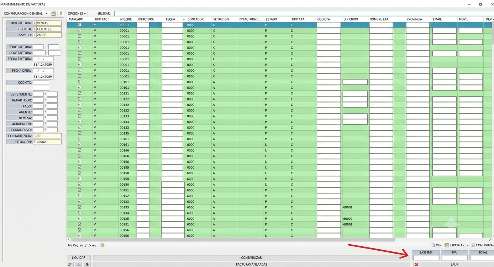
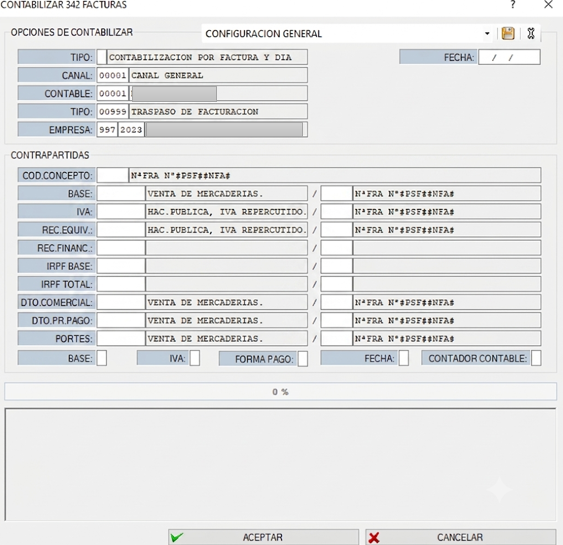
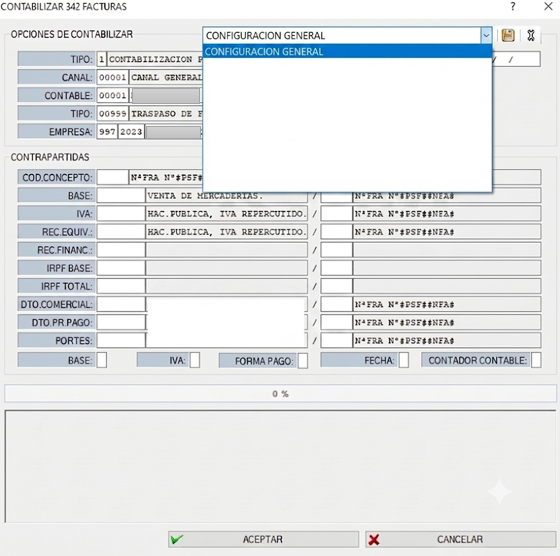
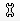
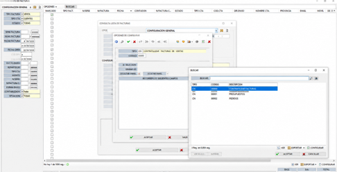
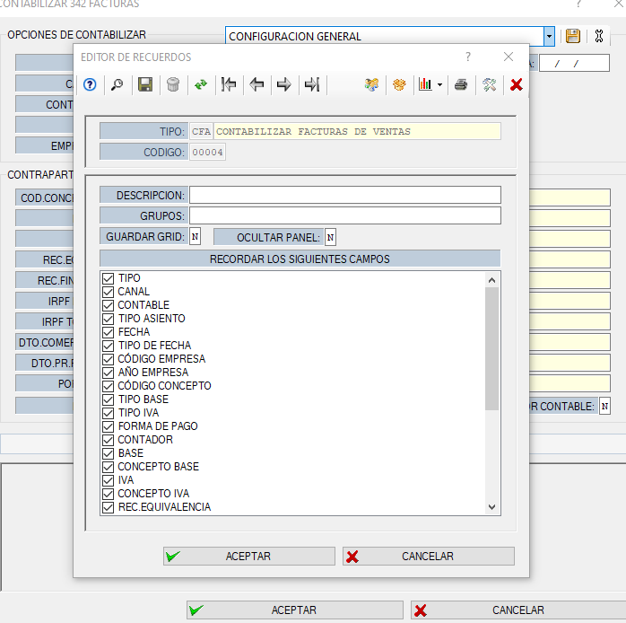
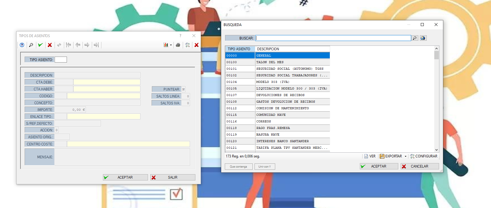
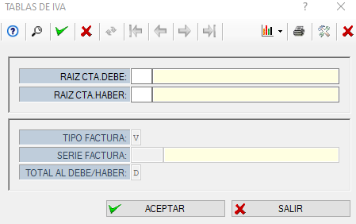
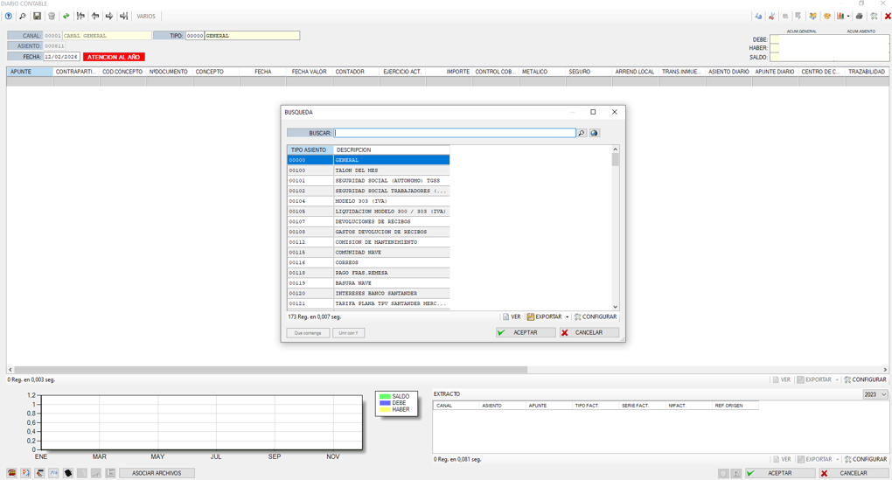
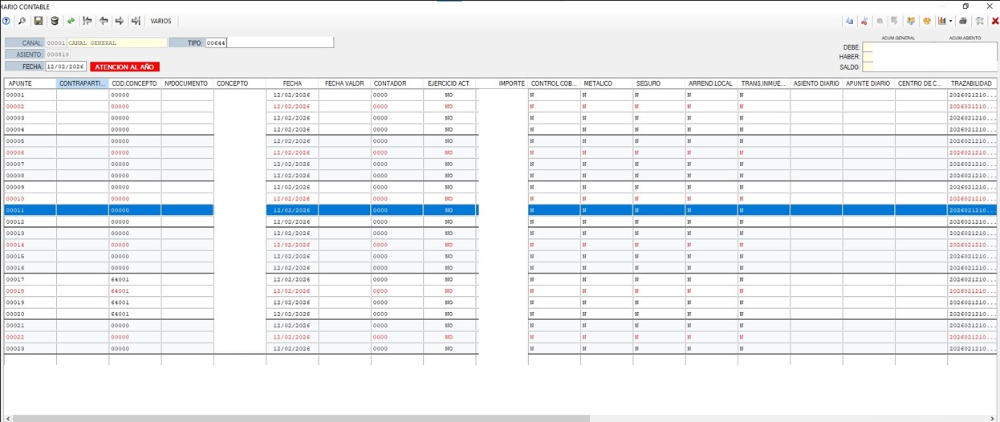

📚 Marco Integral de Procedimientos Contables
Documentación técnica para el cumplimiento fiscal y la gestión contable anual
📄 Informe 347
Procedimiento para la obtención del Listado 347
- Acceda al módulo: Listados e informes → Listados de Libros de IVA.
-
En la pantalla de filtros, configure:
🔢 Totalizar:3005,06por N (NIF factura). - Pulse Aceptar y localice el Formato 347 por trimestre. Seleccione adicionalmente la opción correspondiente a la carta.
📊 Cierre y Apertura del Ejercicio Contable
El proceso de cierre contable anual garantiza la correcta regularización de cuentas, el traspaso de resultados y la apertura ordenada del nuevo ejercicio.
1. CONTABILIZAR UNA FACTURA
📌 ¿Qué se puede contabilizar?
En ERP MAIS se pueden contabilizar:
- ✅ Facturas
- ✅ Vencimientos
- ✅ Liquidaciones
1️⃣ CONTABILIZAR FACTURAS
📍 Paso 1: Ir a Control de Facturas
Ruta habitual dentro del ERP:
Control de Facturas
En la ventana que aparece podremos filtrar por:
- 🔎 Tipo de factura
- 👤 Código de cuenta
- 📅 Fecha
- Otros criterios necesarios
Una vez aplicados los filtros, el sistema mostrará los registros.
📌 Paso 2: Seleccionar Facturas
Seleccionamos las facturas que queremos contabilizar y pulsamos el botón inferior:
CONTABILIZAR

⚙️ Paso 3: Ventana de Configuración (Plantilla)
Aparecerá la siguiente ventana:

Esta ventana corresponde a la configuración de contabilización, también llamada:
🧩 PLANTILLA CONTABLE
⚠️ MUY IMPORTANTE
- ❗ Debe ser facilitada por la gestoría
- ❗ No debe configurarse sin validación contable
- ❗ Define cómo se generan los asientos automáticamente
El cliente debe solicitar a la gestoría:
- Tipo de asiento
- Cuentas contables (Debe / Haber)
- Serie o diario contable
- Configuración de IVA
- Contrapartidas
💾 Guardar como Predeterminada
✔️ Se puede guardar como plantilla predeterminada ✔️ Así no será necesario volver a configurarla cada vez
Después pulsamos Aceptar y el sistema contabiliza las facturas.
2️⃣ PLANTILLAS CONTABLES
Se pueden tener diferentes plantillas según el tipo de operación:
- 🟢 Ventas
- 🔵 Compras
- 🟡 Gastos
- 🟣 Otros movimientos
📍 Ruta para configurar Plantillas

Desde esta pantalla veremos todas las plantillas disponibles.
Si queremos crear una nueva:
👉 Pulsamos el icono de configuración (lado derecho)

🛠️ Editor de Plantillas
Se abrirá el editor donde podremos definir:
- Tipo de contabilización
- Código de plantilla
- Tipo (Ventas, Compras…)
- Configuración de contrapartidas
Con F2 podremos ver las plantillas existentes.

➕ Crear Nueva Plantilla
- Asignamos un nuevo código (ejemplo: 4)
- Añadimos una descripción clara

Después, al volver a contabilizar facturas, la nueva plantilla aparecerá en:
Opciones para contabilizar
⚠️ Importante: establecer correctamente las contrapartidas.
3️⃣ TIPOS DE ASIENTO
Ruta:
Maestros → Contabilidad → Tipos de Asiento

⚠️ IMPORTANTE
- Debe consultarse con la gestoría
- Define el comportamiento del asiento contable
- No debe modificarse sin validación contable
4️⃣ CONCEPTOS CONTABLES
Maestros → Contabilidad → Conceptos contables
Son los textos que aparecen en los asientos.
- Venta mercancía nacional
- Compra servicios
- Regularización IVA

⚠️ IMPORTANTE
- Deben ser facilitados por la gestoría
- Deben coincidir con criterios contables oficiales
5️⃣ TABLAS DE IVA
Maestros → Contabilidad → Tablas de IVA

Aquí se configuran:
- % de IVA
- Cuenta de IVA Soportado
- Cuenta de IVA Repercutido
- Cuenta de Debe
- Cuenta de Haber
⚠️ MUY IMPORTANTE
- Deben ser indicadas por la gestoría
- No deben configurarse por intuición
- Afectan directamente a modelos fiscales
🧾 RESUMEN GENERAL
Para contabilizar facturas correctamente en MAIS es imprescindible tener definidos:
- ✔️ Plantilla contable
- ✔️ Tipo de asiento
- ✔️ Conceptos contables
- ✔️ Tablas de IVA
- ✔️ Cuentas de contrapartida
📌 Toda esta configuración debe ser validada por la gestoría antes de usarse en entorno real.
Diario Contable – MAIS
Registro de asientos manuales y contabilización de nóminas
¿Qué es el Diario Contable?
El Diario Contable permite registrar asientos manuales que no provienen de facturas o movimientos automáticos. Se utiliza principalmente para:
- Registro de nóminas
- Ajustes contables
- Regularizaciones
- Otros asientos manuales según necesidades de la empresa
1️⃣ Crear un nuevo asiento
- Accede al Diario Contable.
- Haz clic en Nuevo asiento.
- Selecciona el Tipo de asiento adecuado.

2️⃣ Registrar una nómina (Ejemplo práctico)
Introduce las líneas manualmente según corresponda:
- Cuenta del trabajador
- Seguridad Social
- IRPF
- Salario neto
- Gastos de empresa (si aplica)

3️⃣ Finalizar el asiento
- Verifica que el asiento esté cuadrado: Debe = Haber
- Guarda el asiento
Con esto, el Diario Contable permitirá registrar asientos manuales, contabilizar nóminas y realizar ajustes contables, siempre usando la configuración y cuentas proporcionadas por la gestoría.